A lightweight temperature predictor: calibrate once, predict fast
This guide explains the whole project in plain language. It covers the problem, the background ideas, the data, the models, and every experiment from P0 to P6, with what each one found. You don't need to know thermal simulation to follow it.
Branch e/p0-p1 · results as of 30–31 Oct 2026 · built from every experiments/*/README.md, plan.md and dataset.md
The project in one page
The problem. A modern chip has several processor cores. When they work hard, they get hot, and if they get too hot they slow down, wear out or fail. The chip's management software (called DTM, dynamic thermal management) needs to know how hot each core is, and ideally how hot it will be a few milliseconds from now, so it can slow a core down before it overheats.
A detailed simulator called HotSpot can compute temperatures very accurately, but it is far too slow to run inside the chip's management software. A single steady-state answer takes about a quarter of a second, and the software needs an answer every millisecond.
The assignment (the problem statement we were given):
“Develop a lightweight temperature predictor. Two stages. Calibration (one-time per floorplan): tune predictor coefficients as per given floorplan for heterogeneous cores. Predictor: predict the temperature (steady state or transient) for a given power input. Metrics: predictor accuracy, prediction time, model size. Wishlist: show the effectiveness of the predictor for proactive DTM.”
Once per floorplan · slow is fine
1 · Calibration
Take a chip layout (the floorplan).
Run HotSpot 24 times with simple, planned power patterns (1 W in one core at a time).
Fit a few numbers per pair of cores.
Save them in a small file, model.npz.
Cost: 8 runs (4 s) for steady state; 24 runs (about 5 CPU-minutes) for everything.
coefficients →
Many times · must be tiny and fast
2 · Prediction
Load the model file (8 kB).
Give it the power of each core (watts).
Get every core's temperature, now (steady) or over time (transient).
No HotSpot needed, only a few multiplications.
Cost: about 3 µs per answer, 1,800× to 90,000× faster than HotSpot.
The answer, in five numbers
0.00003 K
worst error of the steady predictor (S1) against HotSpot. It is exact up to HotSpot's printed digits.
0.06–0.09 K
average error of the transient predictor (T3, M = 4) over whole power traces; 0.3 K at worst.
3 µs
time per prediction, against 0.24 s (steady) or 5.5 ms per step (transient) for HotSpot.
8 kB
the complete model file for one floorplan, steady + transient + hot spots.
60–130×
less time over the temperature limit with proactive DTM using the predictor, compared with reactive DTM.
And one finding that justifies the whole “calibrate per floorplan” idea: every method that skips calibration is 0.5–2.7 K off on average and up to 12 K in the worst case, even when the cores and power are identical and only the layout changes (P1-3).
Background for beginners
These are the ideas every experiment builds on. Each card gives the idea, an everyday comparison, and why it matters here.
Floorplan
A map of where each part sits on the silicon die: rectangles with names, sizes and positions, in millimetres. Ours have 2 big cores (4×4 mm), 6 little cores (2×2 mm), and “FILL” blocks: empty silicon with no power (white space).
Like the floor plan of a house: which room is where, and how big.
Heterogeneous cores
Cores that are not all the same. Big cores are large and draw 10–20 W. Little cores are small and draw 5–10 W. A little core packs more watts into each square millimetre, so it often runs hotter even though it uses less power.
Like a large radiator versus a small but very hot hair-dryer.
Power and temperature units
Power is in watts (W). Temperatures are in °C or kelvin (K). A difference of 1 K is the same as 1 °C, so an error of “0.3 K” just means 0.3 degrees. The chip sits in surroundings at 45 °C (the ambient); a core's rise is how far above 45 °C it is.
HotSpot
A widely used research simulator. It turns the chip and its cooling (heat spreader, heat sink, fan) into a huge network of thermal resistances and capacitances, and solves it. It is our reference, the “truth” we calibrate from and compare against.
Like a detailed weather model: accurate but slow.
Block model vs grid model
HotSpot can treat each block as one lump (block model, fast but rough) or cut the die into a 64×64 grid of small cells (grid model, slower but detailed). The TA uses the grid model, so we do too. A core's temperature is the average of its grid cells.
Both models have 4 layers: silicon, thermal paste, heat spreader, heat sink, plus 12 “rim” nodes for the parts of the spreader and sink beyond the die. Grid: 64×64 cells in every layer, 16,396 nodes. Block: one node per block in every layer. HotSpot computes all layers (e.g. spreader ≈ 59 °C, sink ≈ 58 °C under a 72 °C core); our predictors keep only the silicon layer. All results use 64×64; 128×128 is used only in P0-3 and for S0's kernel.
Steady state vs transient
Steady state: the temperature after the power has been constant for a very long time, with nothing changing any more. Transient: the temperature as it changes over time, millisecond by millisecond, while power changes.
Like the final temperature of a pan on a fixed flame (steady) versus watching it heat up (transient).
Linearity and superposition
HotSpot (without leakage) is linear: double all the power and every rise doubles; run two cores' power separately and add the rises, and you get the same as running them together. We checked this to 0.000001 K (P0-2). It is the reason a simple predictor can be exact.
Like two heaters in a room: each adds its own warmth, and the warmth adds up.
The influence matrix G
Because of linearity, steady temperature is T = T_amb + G·P. G is a table: entry Gij says how many kelvin core i warms up per watt in core j. Gii is self-heating, Gij is coupling. For 8 cores, G is 8×8 = 64 numbers. See the worked example below.
Time constants
Heat moves at different speeds through different parts. The silicon under a core reacts in about 1 ms; the heat sink takes about 8 seconds. A time constant τ is how long one of these parts takes to get about two-thirds of the way to its final temperature.
Like a cup of tea: the cup's surface warms almost instantly, the saucer slowly, the table very slowly.
Calibration
Finding the predictor's numbers for one specific floorplan by running HotSpot a few times with simple inputs (1 W in one core at a time) and reading off how every core responds. It is done once per floorplan; afterwards HotSpot is not needed.
DTM, reactive and proactive
Dynamic thermal management slows cores down (DVFS: lower frequency and voltage) when they get too hot. Reactive DTM acts after a sensor reads too hot. Proactive DTM uses a forecast to act before the limit is crossed.
Like braking when you hit the car in front (reactive) versus easing off when you see the brake lights (proactive).
The three metrics
Accuracy: how far the predictor is from HotSpot, in K (mean error, worst error, error in the peak, and whether it picks the right hottest core).
Prediction time: microseconds per answer (µs; 1 µs = one millionth of a second).
Model size: bytes of numbers stored (1 kB = 1,000 bytes).
Worked example: what G does
Two cores, a little one (core 1) and a big one (core 2). Illustrative values in the range we measured: the little core self-heats 1.5 K/W, the big one 0.6 K/W, and each warms the other by 0.3 K/W.
G = | 1.5 0.3 | P = | 8 W | (little)
| 0.3 0.6 | | 20 W | (big)
rise of core 1 = 1.5·8 + 0.3·20 = 12 + 6 = 18.0 K → 45 + 18.0 = 63.0 °C
rise of core 2 = 0.3·8 + 0.6·20 = 2.4 + 12 = 14.4 K → 45 + 14.4 = 59.4 °C
Notice that the little core ends up hotter with less than half the power. That is the heterogeneity effect we see on every TA floorplan. Calibration simply measures these numbers: put 1 W in core 1 only, read the rise of every core, and you have the first column of G. Repeat for each core.
Worked example: what the transient model T3 does
When you switch on 1 W in a core, its temperature does not jump; it climbs in several stages: a fast part (silicon, about 1 ms), middle parts (tens of milliseconds, then the spreader at about 0.5 s) and a slow part (the heat sink, about 8 s). T3 writes this climb as a sum of M rising curves:
rise_ij(t) = a_ij1·(1 − e^(−t/τ1)) + a_ij2·(1 − e^(−t/τ2)) + … + a_ijM·(1 − e^(−t/τM))
where a_ij1 + a_ij2 + … + a_ijM = G_ij (so the final value is exactly right)
The time constants τ are shared by all cores (they belong to the chip and its package), and only the weights a differ per pair of cores. For M = 4 that is 4 numbers per pair, about 4 kB in total. The predictor keeps M running sums and updates them every step, which takes about 3 µs.
The data
The TAs gave us a sample dataset of heterogeneous floorplans. We use it as the main set, add a few of our own for special tests, and generated 40 more in the same styles.
Set
What it is
Floorplans
Used for
TA 2D floorplans
2 big (4×4 mm) + 6 little (2×2 mm) cores each, FILL blocks for white space, TA layer stack (silicon 150 µm, thermal paste 20 µm), in 4 styles
23
Everything: the main set
Style_1
Big cores together, little cores in a cluster; dies 9×10 to 16×8 mm
3
Style_2
Tightly packed, small dies (62–93 % covered by cores)
5
Style_3
At least 1 mm between cores, long or larger dies
5
Style_4
Same 14×14 mm die, cores scattered (29 % covered)
10
Clean “only the positions differ” test (P1-3)
Main subset
One per style: s1_fp001, s2_fp004, s3_fp002, s4_fp001
4
Expensive experiments (long traces, DTM)
HET-A
Our own heterogeneous layout from flpgen.py (with L2 and NoC blocks)
1
A 24th, differently built floorplan
HOM-16, HOM-64
Grids of 16 and 64 identical cores
2
Model compression for many cores (P2-1)
EV6
HotSpot's classic Alpha processor example (30 blocks) with a real gcc power trace
1
A real workload (P3-1)
Generated
Our generator src/sim/tagen.py, 10 per TA style
40
Extra training data (P0-5d, P1-3)
Power we apply
Nominal (the TA's values): big 20 W, little 8 W, 88 W per chip. Max: big 20 W, little 10 W.
Random steady vectors: each core uniform in its range (big 10–20 W, little 5–10 W).
Phase traces for transients: every core switches between 4 levels in its range, with phases lasting 1 ms to 2 s, all cores independently.
Power is always assigned by core size, never copied from the TA's power files (see the problem below).
Reference settings
HotSpot grid model 64×64, the TA layer stack, HotSpot's “example1” package (heat spreader 30 mm, heat sink 60 mm, convection resistance 0.1 K/W), ambient 45 °C, time step Δt = 1 ms.
Three problems found in the TA data
Style_2 power files put big-core power on little cores (fp_001, 002, 003, 005): 20 W on a 2×2 mm core. Used as given, the chip reaches about 100 °C, 23 °C hotter than with power assigned by size. To be reported to the TA.
s3_fp004 is s3_fp005 rotated by 90°, so they give identical temperatures and are not independent samples.
The TA's transient power files are constant: all 200 rows are identical to the steady row, so they do not exercise the transient model. We generate our own traces (src/sim/powergen.py). The 38 traces used in the experiments, with HotSpot's temperatures for each, are in data/generated_traces/ (as .npz and as TA-style .ptrace + temperature .tsv).
More detail, plus the two papers the TAs pointed to (IC-ThermBench and ATPlace2.5D), is in dataset.md.
The models
Names start with S (steady state) or T (transient). Lower numbers are simpler. The bold rows are what we ship.
Model
In plain words
Calibrated?
Verdict
S0 power blurring
One generic “heat spreads out like this” kernel, applied to any floorplan
No
Baseline only: 0.8 K mean, 5 K worst
S1 influence matrix
T = T_amb + G·P, with G measured on this floorplan
Yes, 8 runs
Exact; the steady model to ship
S1-hot-max
Same idea for a few candidate grid cells per core, take the hottest
Same runs
Predicts the hot spot inside each core; ship it too
S2 compressed G
Each core keeps its k nearest neighbours; the rest share one “package” term
Yes
Only useful for many cores (64 cores: 5.8× smaller)
S2-lr low rank
Squeezes G into a few patterns
Yes
Does not suit heat flow; poor
T0 persistence
“The temperature stays as it is.” No model at all
No
Up to 8 K wrong 10 ms ahead
T1 first-order lag
Each core approaches its steady value with one speed
Yes
Too simple: 14 K wrong
T2 ARX
Next temperature = mix of the last few temperatures and powers, fitted to one long trace
Yes, 1 trace
Works (0.2 K mean); best for 1-step forecasts from sensors
T3 sum of exponentials
M shared time constants, weights per core pair (see the worked example)
Yes, 24 runs
The transient model to ship (M = 4)
T4 reduced state space
HotSpot's own 16,396-node network shrunk to r states
Needs patched HotSpot
Exact reference; 32 states → 0.047 K
The rest of this section explains each model in full: the formula it uses to predict, the data it is trained on, the algorithm that fits it, and how its error is measured. No model uses neural networks, decision trees, SVMs or gradient boosting. HotSpot is a linear system (P0-2), so every model is a linear formula, and its numbers are measured directly or fitted with least squares. Only the calibration-free baselines of P1-3 use regression across floorplans (ridge regression).
Notation and training data shared by all models
N number of cores (power inputs); 8 on the TA floorplans
n number of output blocks (cores + FILL blocks); 11–25 on the TA floorplans
P power of each core, in W (a vector of N numbers)
T temperature of each block, in K
T_amb ambient temperature, 45 °C = 318.15 K
x rise = T − T_amb (how far above ambient)
Δt time step = 1 ms; k = step number; P[k] = power during step k
G influence matrix (n × N): G_ij = rise of block i per watt in core j
Training data (calibration). For each floorplan, P1-1 runs HotSpot 3N = 24 times, always with 1 W in one core and 0 W everywhere else:
N steady runs: the final temperature of every block (and of every grid cell).
N short step runs: switch the 1 W on at t = 0, record every 1 ms for 2 s.
N long step runs: the same, every 20 ms for 100 s (to see the slow heat sink).
The short and long runs are merged into one step response sij(t) per pair of cores: the rise of block i at time t after 1 W is switched on in core j, sampled on a log-spaced time axis from 1 ms to 100 s. T2 (ARX) uses a different input instead: one long HotSpot recording, the 60 s excitation trace in which every core's power jumps randomly.
Test data is never used for training: TA nominal, max and 300 random power vectors per floorplan (steady), and random “phase” power traces of 2 s and 10 s (transient). See The data.
Steady-state models
Input: one power vector P. Output: the final temperature of every block once that power has been on for a long time.
S1
Influence matrix (the steady model we ship)
Predicts
T = T_amb + G · P i.e. T_i = T_amb + Σ_j G_ij · P_j
One matrix–vector product: n × N multiplications (88–200 here).
Trained on
The N steady runs.
Algorithm
No fitting at all: direct measurement. In run j, core j gets 1 W and the others 0 W, so P is the unit vector ej and G·ej is column j of G. The rise HotSpot reports is that column:
G[:, j] = T_HotSpot(1 W in core j) − T_amb for j = 1 … N
Because HotSpot is linear (superposition, checked to 10⁻⁶ K in P0-2), these N columns predict any power vector exactly. The only error left is HotSpot's 6-decimal printing.
Cost and size
8 HotSpot runs (about 4 s). n × N numbers: 928 B with FILL rows, 512 B for 8 × 8 cores.
S1-hot-max
Hot spot inside each core
Predicts
The hottest point of each core, not its average:
T_hot(core c) = max over candidate cells q of c ( T_amb + Σ_j Gcell_qj · P_j )
Trained on
The same N steady runs, but using the full 64 × 64 grid map instead of the block averages. That gives Gcell (4,096 × N): the rise of every cell per watt in each core.
Algorithm
Measurement plus a selection rule. For each core, keep the cells that were its hottest point in any calibration run: the hottest cell when core 1 alone is heated, when core 2 alone is heated, …, plus the hottest at nominal power. That is at most N + 1 = 9 cells, but many repeat: 3 to 9 distinct cells per core, 6 on average. Store only those rows of Gcell. Each row is still exactly linear; the max picks whichever cell is hottest for the given power.
Cost and size
No extra runs. About 3.1 kB.
S0
Power blurring (uncalibrated baseline)
Idea
Assume heat spreads out the same way on every chip, so one generic “spread shape” (a kernel K(r), in K per W at distance r) can stand in for G on any floorplan. “Uncalibrated” means it never runs HotSpot on the floorplan it predicts.
Trained on
One HotSpot run, once, for all floorplans: a tiny 1 W source (0.44 × 0.44 mm) at the centre of a large 28 × 28 mm die with the same layer stack (128 × 128 grid). The rise of every cell is averaged in 0.2 mm rings around the source, which gives K(r).
Predicts
For a new floorplan, build an approximate G from the kernel, then use it like S1:
rise of cell q from 1 W in core j = Σ over cells s of core j w_js · K(|q − s|)
G0_ij = average of that rise over the cells of block i
T = T_amb + G0 · P
wjs is the share of core j's watt in cell s (proportional to area). This is a convolution of the power map with the kernel, hence “blurring”.
Why it is wrong
The kernel was measured in the middle of a big die. It cannot know that heat cannot spread past a die edge (edge cores run hotter), or that a small die heats the spreader differently. Result: 0.77 K mean and 5.2 K worst error (P2-1). It exists to show what calibration adds.
Cost and size
0 runs on the target floorplan. Computing G0 once takes a fraction of a second; after that, prediction is the same as S1 (same size, same speed).
S2 / S2-lr
Compressed G (for chips with many cores)
S2 predicts
Each block i keeps exact values for its k nearest cores (plus itself). Every other core reaches it through one shared “package” number ci (every watt warms the common spreader and heat sink):
Computed from S1's G with no new runs: ci = the mean of the Gij that are dropped (this is the least-squares best single value for them), and Dij = Gij − ci for the kept ones.
S2-lr
Low rank: write G ≈ U·Vᵀ with only r columns, computed by truncated SVD (singular value decomposition) of G. Prediction: T = T_amb + U·(Vᵀ·P). It works poorly because heat flow is local (G is “strong diagonal + a constant”), which is the shape S2 stores and SVD does not.
Transient models
Input: a power trace P[0], P[1], … (one vector per 1 ms step). Output: every block's temperature at the end of every step, starting from a cold chip (everything at ambient), as HotSpot does.
T0
Persistence (no model)
Predicts
Only used for forecasting from sensors (P3-2): “the temperature h steps from now is what the sensor reads now”.
T(k0 + h) = T_sensor(k0)
Nothing to train. It is the bar every model must beat.
T1
First-order lag (one speed per block)
Predicts
Each block moves a fixed fraction of the way towards its S1 steady value every step:
target[k] = G · P[k] (S1's steady rise for this step's power)
x_i[k+1] = a_i · x_i[k] + (1 − a_i) · target_i[k]
a_i = e^(−Δt / τ_i) (τ_i = this block's time constant)
T = T_amb + x
Trained on
G (from the steady runs) and the step responses sij(t).
Algorithm
Nonlinear least squares, one number per block. T1's step response is Gij·(1 − e−t/τi), so for each block i choose τi to minimise
Σ over cores j, Σ over sample times t ( G_ij·(1 − e^(−t/τ_i)) − s_ij(t) )²
This is solved with SciPy's least_squares (a trust-region method), searching over log τ and starting from τ = 1 s.
Why it fails
The real response has parts with time constants from about 1 ms to 8 s. One τ is too slow at the start and too fast later: 14 K worst error.
T3
Sum of exponentials (the transient model we ship)
Model
Each step response is written as M rising curves with M time constants τ1 … τMshared by all pairs of cores (they belong to the chip and package), and weights aijm per pair:
zjm is “how much of core j's recent power has reached speed m”. For power that is constant during each step, this reproduces the fitted step response exactly at every step. Cost per step: N·M filter updates plus one (n × N·M) product, about 3 µs.
Trained on
G and the step responses sij(t), 1 ms to 100 s.
Algorithm
Variable projection: least squares in two nested layers, because the model is linear in the weights a but not in the time constants τ.
Inner layer (exact, linear least squares). For a given set of τ, every curve 1 − e−t/τm is known, so finding the a's is ordinary linear regression. The constraint Σm aijm = Gij is built in by writing the last weight as Gij minus the others. Solved for all pairs at once with numpy.linalg.lstsq.
Outer layer (nonlinear least squares). SciPy's least_squares (trust-region reflective) searches over the M values of log τ, starting log-spaced from 3 ms to 30 s. For each guess it runs the inner layer and scores the leftover error over all pairs and all sample times.
The final τ and a are stored. M = 4 is the default; larger M is more accurate (see P1-1).
Anchored forecast
For DTM with sensors (P3-2): run T3 on the power history up to now, then shift its forecast by the current difference between the sensor and the model, keeping that shift constant over the horizon:
“AutoRegressive with eXogenous input”: the next rise is a weighted mix of the last few rises and powers. With 2 past temperatures and 2 powers, “ARX (2,2)”:
A1, A2 are n × n matrices; B0, B1 are n × N. In forecasting, x[k−1] and x[k−2] can be real sensor readings; open loop, they are the model's own previous outputs.
Trained on
One HotSpot recording: the first 20 s (20,000 steps) of the excitation trace, with its power P[k] and HotSpot temperatures x[k].
Algorithm
Linear least squares (ridge regression with a tiny penalty, λ = 10⁻⁹), i.e. classic system identification. Every step k gives one row of a regression: the features are the past rises and powers, the target is x[k]. All rows are stacked into X and Y and solved in one go:
W = (Xᵀ X + λ I)⁻¹ Xᵀ Y
One extra rule: in steady state ARX must agree with S1, (I − A1 − A2)⁻¹ (B0 + B1) = G. To guarantee this, the equation is rewritten in differences from S1's target G·P[k], and B0 is computed from the rule instead of being fitted.
Watch out
Nothing in the fit forces the model to be stable. With 3 lags on all blocks, the prediction blew up (P1-2). A stability check is needed before using it.
T4
Reduced state space optional
Idea
Not fitted to HotSpot's outputs at all. A patched HotSpot writes out its internal network: capacitances C, conductance matrix Gnet and power map B for 16,396 nodes:
C · dx/dt = −Gnet · x + B · P (x = rise of every node)
Algorithm
Model-order reduction from control theory, no data fitting: (1) modal truncation: keep the 200 slowest “modes” (eigenvectors of the pair Gnet, C, found with SciPy's eigsh); (2) balanced truncation to r states: solve two Lyapunov equations, take an SVD and keep the r best-observed and best-controlled directions; (3) a small first-order filter per pair of cores for the fast parts that were dropped. Then step it with backward Euler at 1 ms, exactly like HotSpot.
Result
32 states → 0.047 K worst. A reference that confirms S1 and T3, but it needs the patched HotSpot.
P1-3
Calibration-free baselines (no HotSpot runs on the target floorplan)
Per core type: average self-heating per core type and coupling against distance, taken from the other 22 floorplans.
Borrowed G: use another floorplan's G (cores matched by type and number).
Geometry regression: ridge regression (numpy, penalty 10⁻³, features standardised) of log Gij on geometry (distance between cores, distances to the die edges, core sizes, die size and shape, white space). Trained leave-one-out: never on the target floorplan.
S0 + learned correction: S0's G0 multiplied by a correction factor learned with the same ridge regression.
All are 0.5–2.7 K off on average, which is why per-floorplan calibration is used.
Calibration time of each model
How long it takes to prepare each model for one floorplan. Almost all of it is HotSpot running, so the table counts the runs first. On our machine one steady HotSpot run takes 0.24 s and one transient step takes 5.2–5.9 ms (P0-4). Running 8 at once is the fastest setting but slows each run down, which is why some figures are in CPU-seconds.
Model
What calibration needs
Time per floorplan
S0 power blurring
Nothing on the target floorplan. One shared kernel from a single point-source run on a 28 mm die, measured once and cached
0 per floorplan (the one-off kernel run was not timed)
S1 influence matrix
8 steady runs, 1 W in one core each
4.3 s
S1-hot-max
Nothing extra: the same 8 runs also write the 64×64 maps
same 4.3 s
S2 compressed G
Nothing extra: built from S1's G
negligible (not timed)
T1 first-order lag
The step runs shared with T3 (the 24-run set)
about 5 min
T3 sum of exponentials (M = 4)
The 24 runs (8 steady, 8 short and 8 long step runs), shared with S1 and T1. The least-squares fit is small next to the runs
about 5 min on an idle core (1,310 CPU-s with 8 runs in parallel)
T2 ARX (2,2)
S1's G, plus one 60 s excitation trace (60,000 steps). The 20 s prefix that works best costs about a third
about 1.8 min (20 s) to 5.5 min (60 s), plus S1's 4.3 s; the fit itself was not timed
T4 reduced state space
A separate debug HotSpot build that exports the matrices (built once), then reduction of the 16,396-state system
11–15 s reduction, plus the one-off build and export
S1 + leakage loop (P4-3)
S1's runs plus one steady run per white-space block: 11–25 steady runs in total instead of 8
3–17 extra runs, about 1–4 s
Recalibration after a package change (P4-2)
The same 24 runs under the new package. A change of ambient temperature needs none
about 5 CPU-min (1,200–3,000 CPU-s in parallel)
For the whole TA dataset, 24 floorplans took 576 runs and 66 min of wall time for S1, T1 and T3 together (P1-1). S1 alone is the cheap model; T3 costs about 70 times more HotSpot time, and T2 is the other expensive one.
Not included: the time to fit S1, S2, T1, T2 and T3 after the runs was not recorded separately (we expect it to be small next to the runs, but that is not measured); prediction time (microseconds, see each experiment); and the ground-truth HotSpot runs used to test the models.
How the error is measured
Every test compares the model with HotSpot on inputs the model never saw during calibration. For each test case (one power vector, or one time step of a trace), the error of core i is
e_i = T_model,i − T_HotSpot,i (in K; cores only, FILL blocks are ignored)
Metric
How it is computed
What it tells you
Mean error (mean abs)
Average of |ei| over all cores and all test cases (or all time steps)
Typical accuracy
Worst error (max abs)
Largest |ei| anywhere: any core, any case or step, worst floorplan
The guarantee you can rely on
Peak error
|maxi Tmodel,i − maxi THotSpot,i|: error in the chip's hottest temperature, worst case
What DTM cares about most
Hottest core right
Share of test cases where the model's hottest core is HotSpot's hottest core, reported for the worst floorplan
Whether DTM would throttle the right core
Fit error (P1-1 only)
Worst error, 1 ms to 100 s, of the response to a step from cold to nominal power (88 W), against the calibration runs
How well the formula can match its own training data; not a test score
Forecast error (P3-2)
At 352 points per trace, forecast h steps ahead from the sensors (HotSpot's values) and compare with HotSpot at that time
How error grows with the horizon
Time is the median of 10,000 single calls on one thread, Python overhead included; for transients, time per step over a 2,000-step run. HotSpot's reference is 0.24 s per steady run and 5.5 ms per transient step (P0-4). Size is the number of stored coefficients × 8 bytes (64-bit numbers) unless stated otherwise.
Tools we built
Before any experiment, we had to make HotSpot precise, fast and reliable enough. Three changes to HotSpot's C code, all applied by one script (setup/build_hotspot_ltp.sh) to a copy of HotSpot, so the original stays untouched:
Precision. HotSpot prints 2 decimals (0.01 K). Our errors are far smaller, so we print 6 decimals.
Speed. In each time step HotSpot solved the same big equation from scratch (“factorising” the matrix). We factorise once and reuse it. Same output, byte for byte, but 29× faster: a 60 s trace now takes about 5 minutes instead of 4 hours.
How: each 1 ms step solves (C/h + G)·T_new = (C/h)·T_old + P. The matrix C/h + G holds only physical constants and the step size h, so it never changes between steps; only the right-hand side does. Factorising it (splitting it into triangular L and U, the slow part) once and reusing L and U leaves only the cheap substitution per step: 230 ms → 5.5 ms per step.
A memory leak. HotSpot's grid transient never freed one vector per step. A 60 s trace needed about 8 GB and was killed. Fixed with one line; memory is now flat at 115 MB and the output is unchanged.
How: HotSpot allocated (malloc) a new power vector every step and never released it. Over 60,000 steps that piled up until WSL (7 GB) killed the run. The fix adds one free after the step has used the vector.
On top of that, a small Python toolkit: src/sim/ runs HotSpot, reads its files, generates power, runs jobs in parallel and caches every run; src/ltp/ is the predictor itself. Every experiment has its own folder with run.py, a README and a results/ folder.
P0A reference we can trust
Before building a predictor, check the reference: does HotSpot behave as the theory says, which settings matter, and how fast is it?
P0-2
Is HotSpot linear?
Question
If we double the power, does every temperature rise exactly double? If two groups of cores are run separately, do their rises add up?
What we did
On the 4 main floorplans: power scaled ×0.5, ×2, ×3; zero power; big cores and little cores run separately and added; a 1 W and a 10 W step. Same checks on a 0.5 s transient trace.
What we found
Linear and additive to the last printed digit: differences of 0.0000005–0.000003 K, which is just rounding.
Zero power gives exactly 45 °C, so the formula T = T_amb + G·P needs no extra offset.
A 1 W calibration step is as good as a 10 W one.
The transient is linear too, so transient models can also be exact in principle.
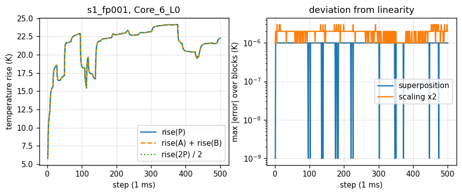
One core's trace and the deviation from perfect linearity (around 10⁻⁶ K).
In one line: HotSpot is a linear system, so a matrix-based predictor can match it exactly; any error later is a modelling choice, not physics.
Folder: experiments/P0-2_linearity/
P0-3
Block vs grid model, grid size, hot spots
Question
How different is the fast block model from the grid model? Is 64×64 fine enough? How much hotter is the hottest point inside a core than the core's average?
What we did
Ran the 4 main floorplans at nominal power with the block model and the grid model at 32, 64 and 128 cells per side.
Floorplan
Block vs grid
Grid 64 vs 128 (true average)
Hottest cell − core average
s1_fp001
1.89 K
0.03 K
3.33 K
s2_fp004
1.14 K
0.01 K
3.99 K
s3_fp002
3.72 K
0.13 K
3.95 K
s4_fp001
5.36 K
0.15 K
3.79 K
What we found
The block model is 1–5 K off, worst on large sparse dies. We use the grid model, as the TA does.
64×64 is fine enough: going to 128×128 changes true averages by at most 0.15 K.
Hot spots are real: the hottest cell is 3.3–4 K above the core average. A DTM limit on core averages lets the real peak run about 4 K hotter. (P2-3 fixes this.)
Little cores run hotter than big ones (74–76 °C against 68–70 °C) because their power density is higher.
HotSpot's own block average counts partly covered edge cells fully, which can shift its number by up to about 1 K. This does not affect our predictor, which predicts HotSpot's numbers exactly as HotSpot reports them.
One grid steady run takes 0.27 s; block model 1.4 ms; 128×128 takes 2.6 s.
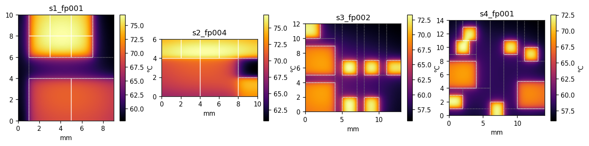
128×128 temperature maps: heat concentrates in the middle of each core.
In one line: use the 64×64 grid model as the reference, and remember that a core's average hides a peak about 4 K higher.
Folder: experiments/P0-3_block_vs_grid/
P0-4
Infrastructure and HotSpot's speed
Question
Can we run HotSpot reliably, precisely and fast enough? How long does HotSpot itself take? That is what the predictor is compared against.
What we did
Built the patched HotSpot (see Tools), checked that its output is identical, timed it on all 23 floorplans, and measured how many runs can go in parallel.
Measurement
Result
Patched vs original output (300 steps)
identical, byte for byte
Transient speed-up from the patch
29× (70.1 s → 2.4 s)
One steady run, grid 64×64
0.24 s
One transient step of 1 ms
≈ 5.5 ms
Original HotSpot, per transient step
≈ 230 ms
Best number of parallel runs
8 (10.5 runs/s)
What we found
The pipeline is reproducible: every run saves its command, config and git commit.
More than 8 parallel runs does not help, because HotSpot is limited by memory speed, not by CPU cores.
In one line: HotSpot needs 0.24 s per steady answer and 5.5 ms per transient step; these are the numbers to beat.
Folder: experiments/P0-4_infrastructure/
P0-5
The TA floorplans
Question
Can we load and run all 23 TA floorplans? Are the temperatures plausible? Which cores get hottest?
What we did
Loaded every TA folder unchanged and ran each floorplan at nominal and maximum power.
What we found
All 23 load and run. Hottest core: 69–77 °C at nominal, 73–83 °C at maximum power. Plausible, so no package change is needed.
A little core is the hottest core on every single floorplan (1.6× the power density of a big core). So “move the task to a little core” is not automatically cooler.
Packing matters more than die size alone: sparse Style_4 is coolest, but Style_1 fp_003, with lots of white space and clustered little cores, is as hot as the dense Style_2 chips.
Confirmed the Style_2 power-file problem (about 100 °C) and the s3_fp004/005 rotation (see The data).
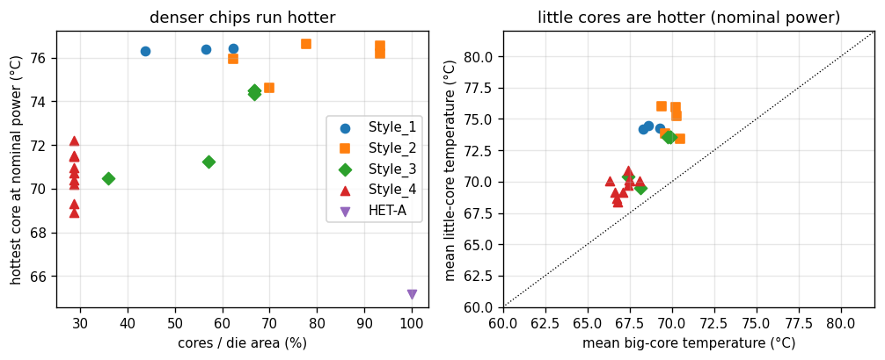
Denser floorplans run hotter; little cores run hotter than big cores.
In one line: the TA data works with our setup, and little cores are the thermal bottleneck.
Folder: experiments/P0-5_ta_floorplans/
P0-5d
Generating more floorplans in the TA styles
Question
The TA asked us to expand the dataset. Can we generate floorplans that behave like the TA's?
What we did
Wrote src/sim/tagen.py: same cores and files, rules that imitate each style. 10 per style, 40 in total, all checked to cover the die exactly.
What we found
They run unchanged and fall in the same temperature range as the TA's floorplans of the same style, slightly cooler on average (random placement clusters little cores less often).
Used as extra training data in P1-3. They did not close the gap to calibration.
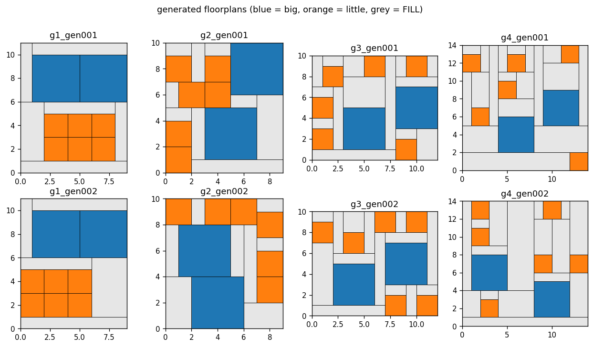
Examples of generated floorplans, one row per style.
In one line: more floorplans are easy to make, but (as P1-3 shows) more data does not replace calibration.
Folder: experiments/P0-5d_generated_floorplans/ · floorplans in data/generated/
P1Calibration
Stage one of the assignment: get the predictor's numbers for one floorplan from a few HotSpot runs. How few? And is it needed at all?
P1-1
Calibration with planned step runs
Question
Can a few planned HotSpot runs give all the predictor's coefficients? What does it cost?
What we did
For each of 24 floorplans (23 TA + HET-A), with N = 8 cores: 8 steady runs (1 W in one core) → G; 8 short step runs (1 ms steps for 2 s) → the fast part; 8 long step runs (20 ms steps for 100 s) → the slow heat-sink part. Then fitted T1 and T3 with M = 1 to 6 time constants.
Model
Worst fit error
Size
T1 (one time constant)
14.1 K
1.0 kB
T3, M = 2
2.82 K
1.9 kB
T3, M = 3
1.04 K
2.8 kB
T3, M = 4
0.46 K
3.7 kB
T3, M = 6
0.12 K
5.6 kB
Fit error = worst error along a step from a cold chip to 88 W, over 1 ms to 100 s, worst of 24 floorplans.
What we found
Steady calibration needs only 8 runs (4 s of HotSpot) and is exact. All 24 runs take about 5 CPU-minutes per floorplan.
The response spans very different speeds: time constants of about 1 ms, 3 ms, 26 ms, 89 ms, 0.56 s and 8.1 s. About 70 % of a core's self-heating appears within 10 ms.
T1 cannot follow this: one speed is either too slow early or too fast later. T3 converges quickly: 0.46 K worst at M = 4.
G shows the heterogeneity clearly: a little core heats itself 2.4× as much per watt as a big core (1.5 vs 0.62 K/W). Cores on the die edge heat themselves more (up to 1.85 K/W), because heat cannot spread outwards.
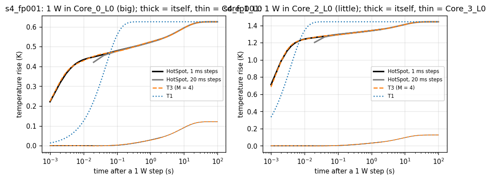
Step responses after switching on 1 W in one core (left: big Core_0, right: little Core_2), log time axis from 1 ms to 100 s. Thick lines: the heated core itself. Black = HotSpot at 1 ms steps; grey = HotSpot at 20 ms steps (used for the slow tail; it starts at 20 ms and dips at first because coarse steps are less accurate early); orange dashed = T3; blue dotted = T1 (right final value, wrong shape). Thin lines at the bottom: a neighbouring core with no power (Core_1 / Core_3), i.e. the coupling. HotSpot (black/grey) and T3 (orange) overlap; it stays near 0 for 10–100 ms until the heat arrives, then climbs to about 0.12 K/W.
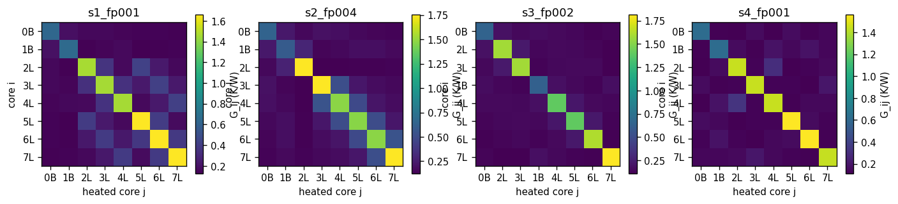
G for several floorplans: the bright diagonal of little cores is self-heating.
In one line: 24 planned runs per floorplan give an exact steady model and an accurate transient model; position on the die matters, not only core type.
Folder: experiments/P1-1_step_calibration/ · 192 calibrated model files in results/models/
P1-2
Calibration from one long trace (ARX)
Question
Instead of planned steps, can one long HotSpot recording with lots of power changes calibrate the transient model? How long must it be?
What we did
Recorded a 60 s trace per main floorplan, fitted ARX models (T2) on the first 1, 5, 20 and 60 s, and tested them on unseen 10 s traces, open loop (the model only sees power).
Model
1 s trace
5 s
20 s
60 s
ARX (2,2), all blocks
9.5 / 79 K
0.31 / 1.2 K
0.21 / 1.03 K
0.32 / 1.3 K
ARX (3,3), all blocks
5.2 / 67 K
unstable
unstable
unstable
ARX (3,3), cores only
4.6 / 51 K
0.40 / 1.5 K
0.32 / 0.95 K
0.39 / 0.96 K
T3 M = 4 from step runs
0.062 / 0.31 K
Mean error / worst error over 8 test traces. “Unstable” = the prediction blows up.
What we found
One trace works, but it must be at least about 5 s long: with 1 s, the slow heat sink is never seen.
Longer is not better beyond about 20 s: the error is lowest near 15–20 s and then rises (see the box below).
Too many lags can make the model unstable: a stability check is needed if ARX is ever used.
T3 from planned steps is 3–5× more accurate and stable by construction. ARX stays useful for short forecasts from sensors (P3-2).
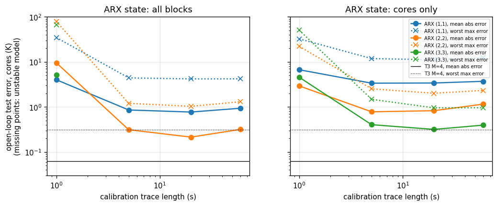
Error vs calibration trace length.
Why does ARX get worse with a longer calibration trace?
Measured with ARX (2,2), all blocks, fitted on the first K seconds of the 60 s trace and tested open loop on the 10 s test traces (mean over the four main floorplans):
Calibration trace
5 s
10 s
15 s
20 s
30 s
60 s
Open-loop error on test traces
0.31 K
0.22 K
0.21 K
0.21 K
0.25 K
0.32 K
One-step error on the calibration data
0.21 mK
0.21 mK
0.20 mK
0.20 mK
0.21 mK
0.20 mK
One-step error on the test traces
0.54 mK
0.53 mK
0.50 mK
0.50 mK
0.48 mK
0.47 mK
Slowest time constant of the fitted model
7.7 s
7.1 s
7.1 s
7.0 s
6.8 s
6.4 s
“One-step” means the model is given HotSpot's own previous temperatures and predicts only the next 1 ms. “Open loop” means it feeds on its own predictions for 10,000 steps. Error is the mean over the cores.
It is a real, smooth trend, not noise. Every floorplan has its minimum around 10–20 s and rises afterwards (the worst, s2_fp004, goes from 0.33 K at 15 s to 0.64 K at 60 s).
It is not overfitting in the usual sense. The error on the calibration data stays flat, and the one-step error on the test traces even improves slightly with more data.
The fit and the test measure different things. Least squares minimises the one-step error, which is already tiny (about 0.0002–0.0005 K, a thousand times below the open-loop error) and almost identical for every length, so the fit cannot tell a 20 s model from a 60 s one. The test runs the model open loop for 10,000 steps. The fitted model has a pole very close to 1 (spectral radius 0.9999, a slowest time constant of 6–8 s, which is 6,000–8,000 steps), so a tiny change in the coefficients, invisible to the one-step fit, grows over thousands of steps into a few tenths of a kelvin. The slowest time constant of the fitted model drifts from 7.7 s to 6.4 s as the trace grows, while HotSpot's slowest mode is about 8.1 s (P3-4).
Too short is bad for another reason. Below about 5 s the slow heat sink is never seen (1 s: 9.5 K error).
It is not because the extra seconds are “quieter”. The power changes at the same rate in seconds 0–20 and 20–60 (about 14 changes per second, in 1.4 % of the steps).
What we do not know. We showed the mismatch between the one-step fit and the open-loop test, and the drift of the slow time constant. We did not prove that this is the whole cause, and we did not test a fix. Fixes worth trying: fit the open-loop (multi-step) error directly instead of the one-step error, or simply calibrate on 15–20 s. T3 does not have the problem, because it fits the measured step responses directly.
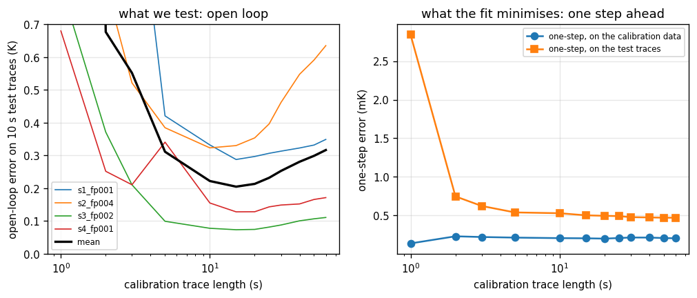
Left: the error we test (open loop) is lowest near 15–20 s and rises. Right: the error the fit minimises (one step ahead) is flat, so the fit cannot see the difference.
In one line: planned step runs (T3) beat “record one trace and fit” (ARX).
Folder: experiments/P1-2_trace_calibration/ (diagnose_length.py makes the box above)
P1-3
Is per-floorplan calibration really needed?
Question
Could a predictor that never runs HotSpot on the target floorplan do as well? The TA data is perfect for this: same cores and power everywhere, only the layout differs.
What we did
Tested every calibration-free method we could think of on 6,946 unseen HotSpot runs (TA nominal, max, and 300 random power vectors per floorplan). Learned methods were trained only on other floorplans.
Method
HotSpot runs on target
Mean error
Worst error
Hottest core right
S1 calibrated
8
0.000007 K
0.00003 K
100 %
S0 + learned correction
0
0.55 K
3.4 K
80 %
S0 power blurring
0
0.76 K
5.2 K
71 %
Borrow another Style_4 floorplan's G
0
1.11 K
5.2 K
60 %
One model per core type
0
1.34 K
8.3 K
61 %
Geometry regression
0
1.94 K
7.4 K
42 %
… + 40 generated floorplans
0
2.13 K
7.6 K
40 %
Borrow s1_fp001's G everywhere
0
2.66 K
12.1 K
45 %
What we found
Calibration is needed. Without it: 0.5–2.7 K mean error, 3–12 K worst, wrong hottest core in 20–60 % of cases. With it: exact, at a cost of 8 runs (4 s).
Position matters, not only core type. The cleanest test: Style_4 floorplans with the same die, cores and power, only the positions differ. Borrowing a neighbour's G is still 1.1 K off on average and up to 5.2 K.
More data does not help: 40 extra floorplans made the regression slightly worse. The best calibration-free model (physics + learned correction) is still four orders of magnitude worse than calibration. This matches IC-ThermBench, where learned models are 0.35–1.3 K off even with thousands of training layouts.
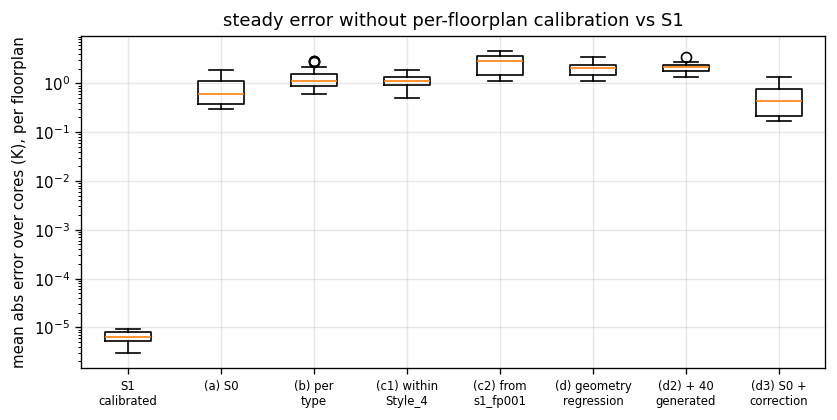
Error by method. The calibrated model is the near-zero bar.
In one line: this is the experiment that justifies the project: 4 seconds of calibration beats every shortcut by a factor of more than 10,000.
Folder: experiments/P1-3_is_calibration_needed/
P2The steady-state predictor
Stage two, steady case: given the power of each core, predict every core's final temperature. How accurate, fast and small can it be?
P2-1
S0, S1 and S2 against HotSpot
Question
On power inputs never seen during calibration, how good is the steady predictor? And how far can it be shrunk for chips with many cores?
What we did
7,248 unseen HotSpot runs on 24 floorplans. Timed 10,000 predictions each. Also tested compression on chips with 16 and 64 cores.
Model
Mean error
Worst error
Time
Size
vs HotSpot
S0 (uncalibrated)
0.77 K
5.2 K
2.5 µs
928 B
94,000×
S1
0.000006 K
0.00003 K
2.6 µs
928 B
91,000×
S1, 32-bit numbers
0.000006 K
0.00003 K
3.1 µs
464 B
77,000×
S1, 302 inputs per call
same
same
0.06 µs each
928 B
4,000,000×
S2, k = 2
0.20 K
2.3 K
8.0 µs
507 B
30,000×
S2-lr, rank 2
3.1 K
12.1 K
3.4 µs
360 B
71,000×
S0 (uncalibrated): power blurring with one generic heat-spread kernel; no HotSpot run on the floorplan being predicted (see S0). 302 inputs per call: all 302 test vectors of a floorplan (nominal, max and 300 random) given to S1 at once as a 302 × 8 matrix, so one matrix–matrix product replaces 302 separate calls and Python's per-call overhead is paid only once. 0.06 µs is the total time divided by 302. Same model, same answers, just batched.
Chip with 64 cores
Size
Worst error
Full S1
32.8 kB
exact
S2, 8 neighbours
5.7 kB
0.59 K
S2, 32 neighbours
19.5 kB
0.18 K
Best low rank
32.8 kB
3.3 K
What we found
S1 beats every target by a wide margin: exact (0.00003 K vs a 0.1 K target), 2.6 µs (target 20 µs), under 1 kB (target 5 kB), always the right hottest core.
32-bit numbers are enough: half the size, no loss.
For 8 cores, compression is pointless (G is already under 1 kB). For 64 cores, S2 shrinks the model 5.8× for 0.6 K.
Low rank does not suit heat flow: heat spreads locally, so G looks like “strong diagonal + a constant”, which is exactly what S2 stores.
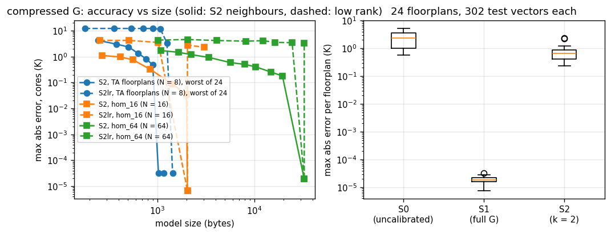
Steady-state accuracy of the models.
In one line: the steady predictor is solved: exact, 2.6 µs, under 1 kB.
Folder: experiments/P2-1_steady_predictor/
P2-2
Why does the layout change the numbers?
Question
All 23 floorplans have the same cores and power, yet their G cannot be swapped. Why? And does white space really keep the chip cooler, as the TA's README says?
What we did
Analysed the calibrated G of all 23 floorplans against geometry: distance between cores, distance to the die edge, die size. No new HotSpot runs.
What we found: three effects
Edges. A core on the die edge cannot spread heat outwards: little cores heat themselves 8 % more on average, up to 27 % more. Most TA cores (117 of 182) sit on an edge.
Distance. Coupling between two cores falls steeply over the first 4 mm (0.63 → 0.15 K/W), then levels off. Which cores are neighbours decides most of G.
Die size. Every core also warms the shared spreader and heat sink, a “package term” of 0.10–0.14 K/W. It is smaller on bigger dies. (Measured as the smallest entry of each floorplan's G: the coupling between the two farthest-apart cores, which share almost no heat through the silicon, only through the package. HotSpot does compute the spreader and sink temperatures, but our models do not predict them; the same 8 calibration runs could add them as extra rows of G.)
White space keeps the chip cooler: peak temperature rises with core coverage (correlation +0.83). Style_4 runs at 69–72 °C, the dense Style_1/2 chips at 76–77 °C.
Even with the same die (Style_4), the hottest core ranges from 68.9 to 72.2 °C, purely from placement.
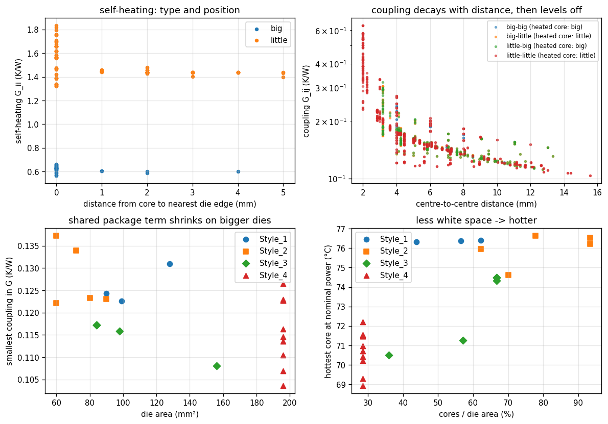
Self-heating vs edge distance, coupling vs distance, and peak temperature vs coverage.
In one line: edges, neighbours and die size make every floorplan's G unique, which is why each floorplan needs its own calibration.
Folder: experiments/P2-2_layout_effects/
P2-3
Predicting the hot spot inside each core
Question
S1 predicts a core's average, but the hottest point is 3–4 K above it (P0-3). Can we predict each core's hottest point directly?
What we did
The calibration runs already produced full 64×64 maps, so we know how every cell responds to every core's watt. Tested several ways to estimate each core's peak on 1,380 unseen HotSpot runs.
Model
Size
Mean error
Worst error
Hottest core right
Core average (plain S1)
512 B
2.73 K
8.96 K
50 %
Average + fixed offset
576 B
0.59 K
4.11 K
82 %
One fixed hottest cell
512 B
0.29 K
3.97 K
68 %
S1-hot-max (a few candidate cells)
3.1 kB
0.078 K
1.6 K
90 %
All cells (exact)
115 kB
0.000007 K
0.00003 K
100 %
“Hottest core right” is for the worst floorplan.
What we found
The core average underestimates the true peak by up to 9 K.
The hot spot moves: in 61 % of cases the hottest cell is a different cell than at nominal power, because a hot neighbour pulls it towards the shared edge. So a fixed offset or a fixed cell is not enough.
S1-hot-max works like S1, but for a few grid cells instead of whole cores. The 8 calibration runs already gave the full 64×64 map, so for every cell we know its rise per watt in each core (one row of 8 numbers). For each core we keep only the cells that ever were its hottest point during calibration: the hottest cell when core 1 alone was heated, when core 2 alone was heated, … and at nominal power. That is at most 9 cells, but many repeat, leaving 3 to 9 candidate cells per core, 6 on average, near the edges facing the hot neighbours. To predict, compute each candidate's temperature with S1's formula (T_amb + row · P, exact because HotSpot is linear) and take the largest as the core's hot spot. The max lets the hot spot move with the power pattern. Error appears only when the true hottest cell is not a candidate, and then a neighbouring candidate is almost as hot: 0.08 K mean, 1.6 K worst, for 3 kB and no extra HotSpot runs.
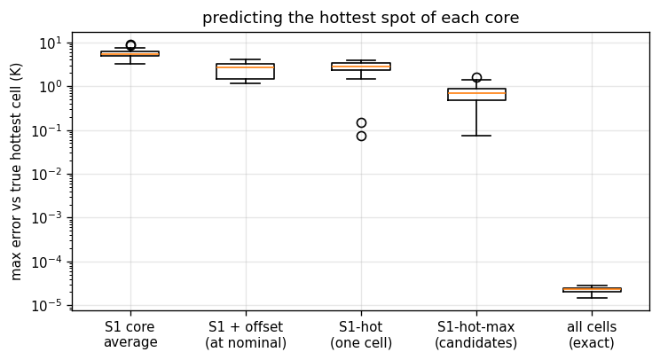
Error of each hot-spot predictor.
In one line: ship S1-hot-max alongside S1 so DTM can protect the real hot spot, not the average.
Folder: experiments/P2-3_hot_spots/
P3The transient predictor
Stage two, transient case: given power that changes every millisecond, follow the temperature over time, and forecast it ahead for DTM.
P3-1
Following HotSpot over time
Question
Given only the power trace, starting from a cold chip, how closely do the transient models reproduce HotSpot's temperatures? How fast and small are they?
What we did
Tested on 2 s traces on all 24 floorplans, 10 s traces on the main 4, and a real workload: the EV6 processor with a gcc power trace.
Model (24 floorplans)
Mean error
Worst error
Time / step
Size
T1
7.25 K
14.6 K
1.5 µs
1.0 kB
T3, M = 2
0.92 K
2.9 K
3.0 µs
1.9 kB
T3, M = 3
0.19 K
1.1 K
3.0 µs
2.8 kB
T3, M = 4
0.090 K
0.30 K
3.1 µs
3.7 kB
T3, M = 6
0.0093 K
0.13 K
3.2 µs
5.6 kB
T2 ARX (main 4)
0.19 K
0.57 K
5.4 µs
6.2 kB
T3 M = 4 on EV6 + gcc
0.073 K
0.21 K*
4.4 µs
28.8 kB
* After the first 20 ms. In the very first 1 ms from a cold chip, tiny EV6 blocks reach 1.3 K error.
What we found
T3 with M = 4 is the transient model to ship: 0.06–0.09 K average, 0.3 K worst, 3 µs per step (1,800× faster than HotSpot), about 4 kB.
Accuracy improves smoothly with M; speed barely changes. M is the accuracy-vs-size knob.
T1 is not usable (overshoots early, lags later). ARX works but is about 2× worse than T3.
It carries over to a real workload on a different chip (EV6 + gcc): 0.07 K average.
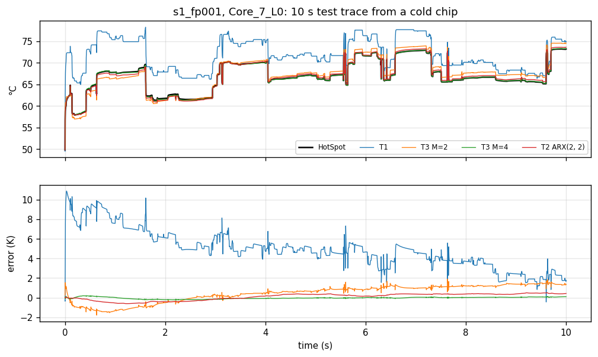
HotSpot and the models on one test trace. T3 sits on top of HotSpot.
In one line: T3 (M = 4) follows HotSpot within a tenth of a degree, 1,800× faster.
Folder: experiments/P3-1_transient_predictor/
P3-2
Forecasting ahead from sensor readings
Question
A DTM controller reads the on-chip sensors and wants the temperature some steps ahead for the power it plans to use. How does the error grow with the horizon?
What we did
At 352 points in each test trace, gave each model the sensor readings so far plus the planned power, and forecast 1 ms, 10 ms, 100 ms and 1 s ahead. “Anchored” T3 shifts its prediction so it matches the sensors right now.
Model
1 ms ahead
10 ms
100 ms
1 s
No model (persistence)
0.013 K
0.11 K
0.69 K
2.7 K
T1 from sensors
0.88 K
3.6 K
4.7 K
4.2 K
T3 open loop
0.06 K
0.06 K
0.06 K
0.06 K
T3 anchored on sensors
0.0009 K
0.0044 K
0.017 K
0.055 K
T2 ARX from sensors
0.0013 K
0.015 K
0.10 K
0.42 K
Mean errors. Worst cases: persistence 4.3 K at 1 ms and 8 K at 10 ms; T3 anchored 0.15 K at 10 ms and 0.5 K at 1 s.
What we found
“No model” is not an option: persistence is fine on average, but up to 8 K wrong 10 ms ahead, right when a power step hits and DTM needs to act.
T3 anchored is the best forecaster from 10 ms to 1 s: under 0.005 K on average 10 ms ahead.
ARX is best for a single 1 ms step but degrades fastest. T1 is worse than doing nothing.
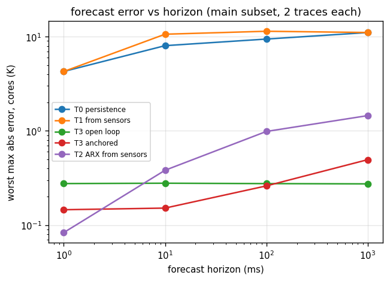
Forecast error vs how far ahead.
In one line: for DTM decisions 10–20 ms ahead, use T3 anchored on the sensors.
Folder: experiments/P3-2_forecast_horizon/
P3-3
Accuracy vs size vs time: the trade-off
Question
Across all models, which ones are on the Pareto front, meaning no other model is both smaller and more accurate?
What we did
Collected every model's size, worst error and speed from P1-2, P2-1, P3-1 and P3-4 into one plot.
What we found
Steady state has no real trade-off: S1 is exact at 464 B.
Transient: T3 is the front from 2 to 6 kB. Each extra time constant costs 1 kB and divides the worst error by 2–4. Default: T3 M = 4 (4 kB, 0.31 K worst); M = 6 when 0.06 K is wanted.
T4 only wins below 0.05 K, from about 16 kB.
All models are 1,000–100,000× faster than HotSpot, so the choice is about accuracy and size, not speed.
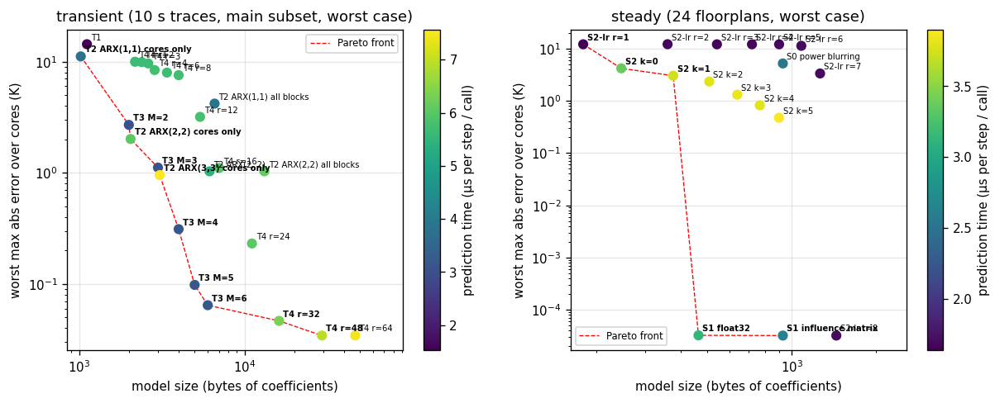
Size vs worst error for every model; the Pareto front is bold.
In one line: T3 gives the best accuracy per kilobyte; M picks your point on the curve.
Folder: experiments/P3-3_pareto/
P3-4
The exact model, shrunk (T4) optional
Question
Instead of fitting HotSpot's outputs, take HotSpot's own internal network (exact by definition) and shrink it. How small can a near-exact model get?
What we did
A debug patch makes HotSpot write out its matrices: 16,396 nodes per floorplan. We checked that this reproduces HotSpot, then reduced it in three steps: keep the 200 slowest modes, balanced truncation to r states, plus a small filter for the fast parts that were dropped.
States r
Size
Mean error
Worst error
Full (16,396)
huge
0.000001 K vs HotSpot
16
7.0 kB
0.29 K
1.1 K
24
11.1 kB
0.044 K
0.23 K
32
16.2 kB
0.0074 K
0.047 K
64
46.8 kB
0.00005 K
0.034 K
T3 M = 4, for comparison
4.0 kB
0.062 K
0.31 K
What we found
The exported network reproduces HotSpot to 0.000001 K and its steady gain equals our calibrated G. This independently confirms that S1 is exact.
About 30 states are enough for under 0.05 K.
Without the fast-part filter, the error got stuck at 3.3 K for every size: at 1 ms steps, the fastest silicon modes are not instantaneous. Matching the first step matters as much as matching the final value.
T3 is the better product (more accurate at the same size, needs no patched HotSpot); T4 is the better reference.
Is T4 cheating? Do we need HotSpot's matrices for every new floorplan? No. Every model uses HotSpot once per floorplan, which is what the calibration stage is for, and none sees the test inputs. T3 and S1 need only HotSpot's outputs (24 normal runs, a black box), so the same method would work with another simulator or real measurements. T4 opens HotSpot up (a patched build dumps its matrices), so it only works with a simulator whose internals we can read. That is why it stays an optional reference.
Why the small models are so much faster: HotSpot solves for all 16,396 nodes every step (5.5 ms). We only need 8 core temperatures from 8 core powers for one fixed floorplan, and because the system is linear, that narrow question has a tiny exact answer: a 32-number state (T4) or 32 filters (T3), about 1,500 multiplications per step, a few µs. The price: a new floorplan or package needs recalibration (P4-2).
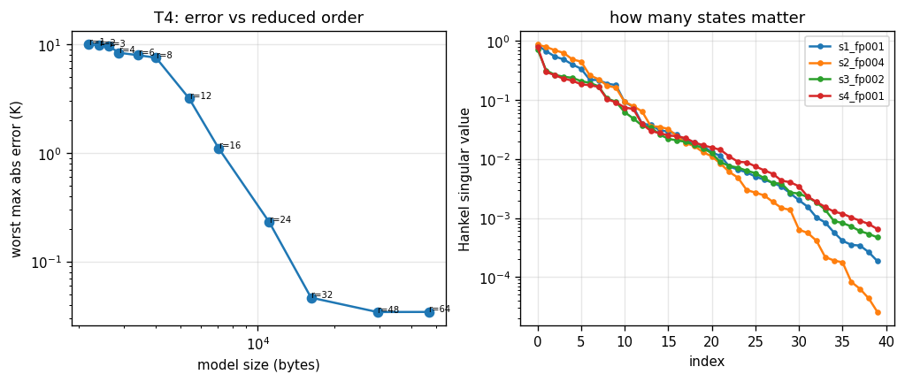
Error vs number of states r.
In one line: HotSpot really is a 16,000-node linear system that a 32-state model captures almost perfectly, but T3 is still the smarter product.
Folder: experiments/P3-4_state_space_T4/
P4Robustness: where does it break?
The models were calibrated with simple inputs. Do they still hold for unusual power, a different time step, a changed cooler, or temperature-dependent power?
P4-1
Unusual inputs
Question
Does the predictor still work for power far above its range, very bursty power, tasks hopping between cores, another time step, or a warm start?
What we did
Each case on the 4 main floorplans, compared with HotSpot, using the existing S1, T3 (M = 4) and T2 models.
Case
T3 mean
T3 worst
Status
Normal trace (reference)
0.10 K
0.32 K
fine
Steady power at 3× the maximum (S1)
0.00002 K
0.00005 K
fine
Transient at 2× power
0.21 K
0.64 K
fine (≈1 % of rise)
Bursty: switches every 1–5 ms
0.11 K
0.44 K
fine
Task migration between cores
0.076 K
0.31 K
fine
Time step 0.1 ms instead of 1 ms
0.14 K
2.16 K
weak spot
Time step 10 ms
0.079 K
1.88 K
weak spot
Warm start (after the first 50 ms)
0.029 K
0.27 K
fine
What we found
Power level, burstiness and task placement do not matter: the coefficients describe the chip, not the workload (a result of linearity).
The weak spot is a different time step (about 1–2 K worst). Recommendation: calibrate at the same time step the DTM controller uses; calibration is cheap.
The early 2 K error on a warm start comes from HotSpot itself (its warm start is not a perfect steady state).
In one line: robust to anything about the workload; just calibrate at the time step you will use.
Folder: experiments/P4-1_robustness/
P4-2
What if the package changes? optional
Question
The coefficients belong to one floorplan and one cooling setup. What happens if the ambient temperature or the heat sink changes?
What we did
Three changes: ambient 35 °C instead of 45 °C; heat-sink resistance doubled (worse cooler); halved (better cooler). Compared the old model with a recalibrated one.
Change
Old model
Steady worst error
Fix
Ambient 35 °C
forgot to update Tamb
10.0 K
just update Tamb: 0.00002 K
Ambient 35 °C
with new Tamb
0.00002 K
no recalibration
Worse heat sink (×2)
old coefficients
8.5 K
recalibrate → 0.00001 K
Better heat sink (×0.5)
old coefficients
4.4 K
recalibrate → 0.00002 K
What we found
Ambient change: no recalibration. The model predicts the rise above ambient, so only Tamb needs updating.
Heat-sink change: recalibrate (24 runs). Otherwise 4–8.5 K off in steady state; on short traces the error appears slowly, because the sink takes tens of seconds to warm up.
The error is almost exactly “change in sink resistance × total power”, so a sink change might be correctable without any HotSpot runs. Not tested yet.
In one line: a model is tied to its cooler; new ambient is free, new heat sink means recalibrating.
Folder: experiments/P4-2_recalibration/
P4-3
Leakage: power that depends on temperature optional
Question
Real chips leak more power when hot, which breaks linearity. How much does that hurt, and can a small fix repair it?
What we did
Turned on HotSpot's leakage model at its default strength and at 10× (a separate build), and compared S1 alone with S1 plus a short loop: predict, compute leakage at that temperature, predict again, until it settles.
Truth. HotSpot with -leakage_used 1: every silicon block leaks P_leak = α · area · e^(β (T − 383.15 K)) (α = 1.5×10⁴ W/m², β = 0.036/K, so leakage doubles about every 19 K). HotSpot iterates power ↔ temperature until it settles. Steady state only.
Two strengths. Default leakage is tiny at our temperatures (about 0.5 W of 88 W). α is hard-coded in HotSpot's C source, so a second copy was built with 10× α (2–5 W, 3–5 % of chip power).
Test set. 4 main floorplans × 50 random power vectors, run in both builds.
S1 alone: the normal, leakage-free T = T_amb + G·P.
S1 + loop: start from S1, then repeat T = T_amb + G_all·(P + P_leak(T)) until T changes by < 0.0001 K. G_all also has columns for the FILL blocks, because they leak too (one extra calibration run per FILL block). α and β are assumed known: they belong to the chip technology, not the floorplan.
Leakage
Leakage power
S1 alone (worst)
S1 + loop (worst)
Loop time
Default
0.2–0.5 W
0.08–0.10 K
0.00002 K
22–25 µs
10× stronger
2–5 W
0.77–1.07 K
0.00006 K
29–33 µs
What we found
Ignoring leakage costs about 0.1 K (default) or 1 K (10×).
A 3–4 iteration loop removes the error completely in about 30 µs, still about 10,000× faster than HotSpot.
Limit: HotSpot only supports leakage in steady state, so the transient side could not be tested.
Caveat: most of this leakage comes from FILL blocks. HotSpot applies the formula to every block by area, and FILL is most of the die (about 71 % on s4_fp001). If the white space is empty silicon, it would not really leak and these numbers are an upper bound; if it is uncore logic (caches, interconnect), it would. To ask the TA.
S1 vs S1 + loop, side by side
Range over the four main floorplans (50 random power vectors each, tested against HotSpot with leakage on).
S1 alone, default leakage
S1 + loop, default leakage
S1 alone, 10× leakage
S1 + loop, 10× leakage
Leakage power in the chip
0.2–0.5 W
2–5 W
Mean error
0.06–0.09 K
5–7×10⁻⁶ K
0.64–0.96 K
0.8–4×10⁻⁵ K
Worst error
0.08–0.10 K
1–2×10⁻⁵ K
0.77–1.07 K
2–6×10⁻⁵ K
Time per prediction
about 2.6 µs*
22–25 µs
about 2.6 µs*
29–33 µs
Loop iterations
1 (none)
3
1 (none)
4
HotSpot runs to calibrate
8
11–25 (8 + 3–17 FILL blocks, about 1–4 s extra)
8
11–25
What it must know in advance
nothing
leakage formula (α, β)
nothing
leakage formula (α, β)
*S1's time is the P2-1 measurement (one matrix–vector product); it was not timed again inside P4-3. The loop's time includes its iterations.
Accuracy: the loop cuts the mean error by a factor of about 10,000 at default leakage and 20,000–100,000 at 10×, down to about the output precision of HotSpot. It stays accurate when leakage grows, while S1 alone gets about 10× worse.
Speed: the loop is about 10× slower than S1 alone (22–33 µs against 2.6 µs) because it repeats the matrix–vector product 3–4 times. That is still about 8,000× faster than one HotSpot steady run (0.24 s).
Cost: the loop needs 3–17 more steady HotSpot runs per floorplan, because the white-space (FILL) blocks leak too and so need their own columns.
Which to ship: with HotSpot's default leakage (0.1 K without the loop), plain S1 is enough. If leakage is several percent of chip power (1 K at 10×), add the loop. This holds only if the leakage formula is known, and only for steady state, since HotSpot could not simulate leakage in transient runs.
Caveat: both strengths are upper bounds if the white space is empty silicon (see the caveat above).
In one line: leakage is a small, fully fixable effect at these temperatures.
Folder: experiments/P4-3_leakage/
P5The product: the ltp package
Both stages as plain commands, usable by someone who did not write the code. The predictor needs only NumPy and an 8 kB model file.
P5-1
Commands and Python use
# Stage 1: calibrate (24 HotSpot runs, about 5 CPU-minutes; cached afterwards)
python3 -m src.ltp calibrate s4_fp001 -o model_s4_fp001.npz
# Stage 2: steady temperatures for a power vector (W per core)
python3 -m src.ltp steady model_s4_fp001.npz --power 20,20,8,8,8,8,8,8
# The TA's own .ptrace files are read directly
python3 -m src.ltp steady model_s4_fp001.npz --ptrace data/sample_dataset/2D_floorplans/Style_4/fp_001/fp_001_steady.ptrace
# Transient: writes a HotSpot-style .ttrace
python3 -m src.ltp transient model_s4_fp001.npz --ptrace trace.ptrace --dt 0.001 -o out.ttrace
# Forecast, anchored on measured temperatures
python3 -m src.ltp forecast model_s4_fp001.npz --history past.ptrace --temps T_now.txt --next plan.ptrace
# The three metrics against HotSpot
python3 -m src.ltp bench model_s4_fp001.npz s4_fp001
Actual bench output on s4_fp001:
model model_s4_fp001.npz: 8032 B of coefficients (G 1600 B, T3 6432 B, M = 4)
steady vs HotSpot on 302 vectors: MAE 5.19e-06 K, max 1.40e-05 K, 2.6 us per call
transient vs HotSpot on 2000 steps (1 ms): MAE 0.051 K, max 0.189 K, 3.5 us per step
from src.ltp.predictor import Predictor
p = Predictor.load("model_s4_fp001.npz")
T = p.steady([20, 20, 8, 8, 8, 8, 8, 8]) # temperatures of every block (K)
z = p.run_state(P_history, dt=1e-3) # internal state after the power so far
T_next = p.forecast(T_sensors, z, P_plan, dt=1e-3) # next steps, anchored on the sensors
7 unit tests (python3 tests/test_models.py) all pass. Not done: a pip-installable package and a --model T2 option.
Folder: experiments/P5-1_ltp_package/ · code in src/ltp/
P6Wishlist: proactive DTM
The assignment's wishlist: show that the predictor makes thermal management better. We built a closed loop where a controller manages a HotSpot “chip” in real time.
P6-1
Driving HotSpot step by step
Question
DTM needs a chip whose power can change every step in response to its own temperature. HotSpot normally reads a fixed power file. Can we drive it one step at a time?
What we did
src/sim/stepper.py feeds HotSpot one power row at a time through a pipe and reads back each temperature row. One small patch makes HotSpot flush its output after every row.
What we found
Exactly identical (0 K difference) to a normal HotSpot run, from a cold or warm chip, with no extra cost per step.
Simpler than the plan's C program: same binary, same config as every other experiment.
Folder: experiments/P6-1_closed_loop_hotspot/
P6-2
Reactive vs proactive DTM wishlist
Question
Does a forecast from the predictor let DTM act before the limit is crossed? Is that better than reactive DTM? Does the predictor's accuracy matter?
What we did
HotSpot as the chip (4 s runs). Every core requests power from a random workload; the controller sets each core's speed level (100 % down to 50 %) every 10 ms. Reactive: slow down a core that is over the limit. Proactive: forecast 20 ms ahead and pick the fastest speeds whose forecast stays under the limit. Forecasters: T3, T1, or none (persistence). Two floorplans, a normal and a tight limit.
Tight limit
Policy
Core-ms over limit
Throughput
s1_fp001 (76.7 °C)
none
10,400
1.000
reactive
2,900
0.985
proactive, T3
22
0.975
proactive, T1
61
0.977
proactive, no model
665
0.937
s4_fp001 (68.6 °C)
none
14,300
1.000
reactive
3,890
0.976
proactive, T3
63
0.960
proactive, T1
100
0.963
proactive, no model
1,500
0.908
Throughput = average speed (1.000 = never slowed). At the normal limit, proactive T3 reduces violations from 88–173 core-ms (reactive) to 0–2.
What we found
Proactive DTM with T3 almost eliminates overheating: 60–130× less time over the limit than reactive DTM.
The price is small: 1–1.6 % less throughput at the tight limit, 0.1–0.2 % at the normal one. It slows down a little early instead of a lot late.
Accuracy matters: with no model, violations are 20–30× higher and throughput is lowest (it reacts late, then over-corrects).
Each decision takes 0.4–0.7 ms in Python, 4–7 % of the 10 ms interval.
Not done: moving tasks between big and little cores as a DTM action.
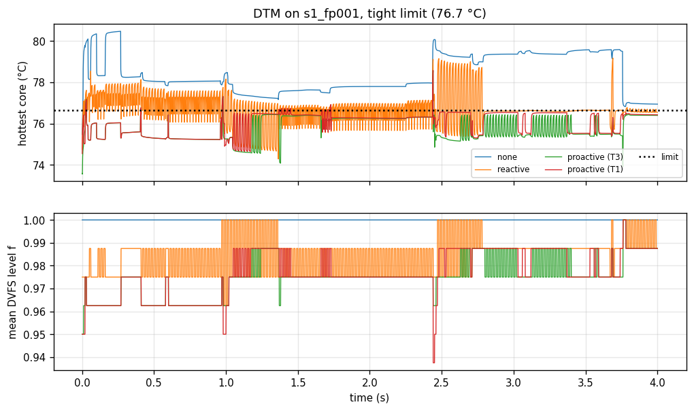
s1_fp001, tight limit. Reactive DTM saw-tooths around the limit; proactive stays just below it.
In one line: the wishlist is met: the predictor turns DTM from “fix it after” into “avoid it before”, almost for free.
Folder: experiments/P6-2_dtm/
P6-3
Which cores should run the busy tasks? wishlist
Question
A scheduler must place 4 busy tasks on 4 of the 8 cores. Which placement keeps the chip coolest, and does the predictor choose the same as HotSpot?
What we did
Scored all 70 possible placements on each main floorplan with S1 and with HotSpot.
What we found
S1 picks the same best placement as HotSpot on all 4 floorplans and ranks all 70 identically, in about 12 µs for all 70 together, against about 100 CPU-seconds for HotSpot: about 8,000,000× faster.
The choice matters: the worst placement is 2.6–4.9 K hotter than the best.
The best placement differs per floorplan (both big cores on one, four spread-out little cores on another). Only a floorplan-specific model can know this.
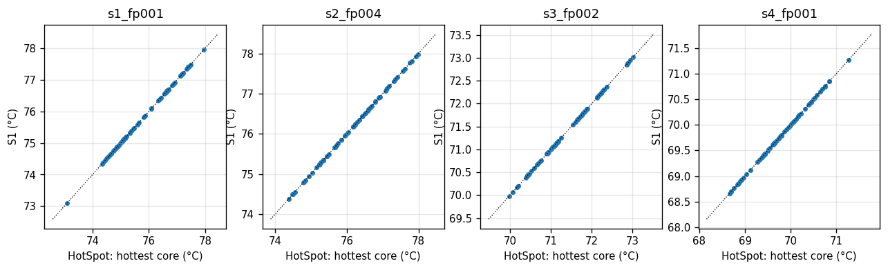
S1 vs HotSpot score for every placement: a perfect line.
Folder: experiments/P6-3_core_selection_demo/
Scorecard against our targets
The targets from plan.md §1.4, taken from the literature before we started.
Metric
Target
Achieved
Status
Steady predictor (S1)
Mean error per block
≤ 0.1 K
0.000006 K
met
Error in the peak
≤ 0.2 K
0.00003 K
met
Hottest core right
≥ 99 %
100 %
met
Time per prediction
≤ 20 µs
2.6 µs
met
Model size
≤ 5 kB
464–928 B
met
Calibration runs
≤ N + 1 = 9
8 runs, 4 s
met
Transient predictor (T3, M = 4)
Mean error over a trace
≤ 0.5 K
0.06–0.09 K
met
Error in the peak
≤ 1 K
0.27–0.30 K
met
Hottest core right
≥ 95 %
96 % (worst floorplan)
met
Time per step
≤ 50 µs
3.1 µs
met
Model size
≤ 50 kB
3.7–4 kB
met
Calibration time
≤ 2 min wall
≈ 2.75 min per floorplan (8 runs in parallel)
slightly over
Timing was measured on one laptop (WSL, 20 threads); some runs shared the machine with other HotSpot jobs. Final numbers should be re-measured on an idle machine.
Ten lessons
HotSpot is linear (without leakage), so a simple matrix predictor can be exact, not just approximate.
Calibration is cheap and essential. 8 runs (4 s) make the steady model exact; skipping it costs 0.5–2.7 K on average, up to 12 K.
Position matters, not just core type. Edges, neighbours and die size make each floorplan's numbers unique.
Little cores are the hot ones: higher power density means about 2.4× the self-heating per watt.
Core averages hide hot spots 3–9 K hotter, and the hot spot moves; S1-hot-max tracks it for 3 kB.
Heat moves on time scales from 1 ms to 8 s; one time constant (T1) cannot capture it, four (T3) can.
Planned step runs beat fitting a recorded trace, by 3–5× and with guaranteed stability.
Forecasting needs a model: “temperature stays the same” is up to 8 K wrong 10 ms ahead.
The model belongs to the cooler too: a new ambient is free, a new heat sink needs recalibration.
Proactive DTM with the predictor nearly eliminates overheating for about 1 % throughput.
Open items
Ask the TA which hotspot.config they used, and whether the Style_2 power files are meant to put big-core power on little cores, and what the FILL white space represents (empty silicon or uncore logic), which decides whether it should leak in P4-3.
Re-measure timing on an idle machine for the final report.
Untested ideas: correcting a heat-sink change without HotSpot runs (P4-2); leakage in transients (P4-3); task migration as a DTM action (P6-2); a vectorised DTM controller (under 0.1 ms per decision).
Packaging: pyproject.toml for pip install (P5-1).
Do not commit the local Dataset/ folder; it duplicates data/sample_dataset/.
Glossary
Ambient (Tamb)
The temperature of the surroundings, 45 °C here. Rises are measured from it.
ARX
“Auto-regressive with exogenous input”: next temperature = weighted mix of recent temperatures and powers. Our T2.
Balanced truncation
A standard way to shrink a large linear system by keeping the states that matter most for input → output. Used in T4.
Backward Euler
The step-by-step method HotSpot uses to advance time. One step per sampling interval.
Big / little core
4×4 mm cores at 10–20 W, and 2×2 mm cores at 5–10 W.
Calibration
Running HotSpot a few times on one floorplan to measure the predictor's numbers.
Coupling (Gij)
How much core j's watt warms core i, in K/W.
DTM
Dynamic thermal management: slowing cores to keep them under a temperature limit.
DVFS
Dynamic voltage and frequency scaling: running a core slower to use less power.
FILL block
White space on the die: the TA's rectangles (FILL_0, …) covering all silicon that is not a core. 0 W of power, but heat spreads through them, so they are outputs of G (rows) but not inputs (columns). HotSpot's leakage model does make them leak (P4-3).
Floorplan (.flp)
File listing every block's name, size and position.
G (influence matrix)
Table of K/W numbers: T = T_amb + G·P.
Grid model
HotSpot mode that splits the die into 64×64 cells.
Hot spot
The hottest grid cell inside a core.
K (kelvin)
Temperature unit; a 1 K difference equals 1 °C.
Layer stack (.lcf)
The file describing the layers (silicon, thermal paste) and their properties.
Leakage
Power a chip loses that grows with temperature.
Linear / superposition
Effects scale with power and add up across cores.
M
Number of time constants in T3. More M = more accurate and slightly bigger.
MAE
Mean absolute error: average size of the error.
Nominal power
The TA's typical power: big core 20 W, little core 8 W, 88 W per chip. Used as a reference test vector, for P1-1's fit error and for S1-hot-max's candidate cells.
Open loop
The model sees only power, never the true temperatures.
Package term
The part of G every core shares through the spreader and heat sink, 0.10–0.14 K/W: the coupling between the two farthest-apart cores.
Pareto front
The models for which no other model is both smaller and more accurate.
Persistence
“No model” forecast: assume temperature stays as it is now.
Phase trace
Test power where each core switches between levels in phases of 1 ms to 2 s.
Proactive / reactive
Acting on a forecast before the limit / acting after the sensor reads over the limit.
.ptrace / .ttrace
HotSpot's power-trace input file and temperature-trace output file.
Self-heating (Gii)
How much a core warms itself per watt.
Steady state
The final temperature when power stays constant forever.
Time constant (τ)
How long a part of the chip takes to get about 63 % of the way to its final temperature.
Transient
Temperature changing over time.
Δt
Time step: 1 ms here.
Where things are
Path
What it holds
plan.md
The project plan, targets (§1.4), experiments (§5) and status (§15)
dataset.md
The TA dataset and the two papers
PROGRESS.md
Dated log of results
experiments/README.md
Index of all experiments with one-line results
experiments/<ID>_<name>/
run.py, README.md, results/ for each experiment
setup/
Script and patches that build the improved HotSpot
configs/
HotSpot configs (grid 64×64 and block)
src/sim/
HotSpot runner, floorplans, power generators, parallel runs, stepper, floorplan generator
src/ltp/
The predictor: models, calibration, Predictor, command line
tests/test_models.py
7 unit tests
data/sample_dataset/, data/generated/
TA floorplans and our 40 generated ones
data/generated_traces/
Our 38 transient power traces with HotSpot's temperatures, plus HotSpot inputs/outputs from P0-4, P4-1, P6-1 and P6-2 (copied from ~/ltp_runs; local only, about 183 MB, not in Git)
How to rerun anything
# one-time, inside WSL
bash setup/build_hotspot_ltp.sh
# any experiment (HotSpot runs are cached in ~/ltp_runs/)
bash experiments/run.sh P2-1_steady_predictor
# order matters only through the caches: P1-1 first, then P1-2, then the rest